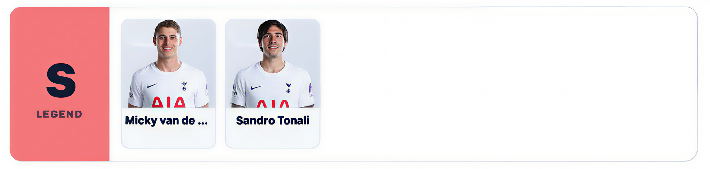
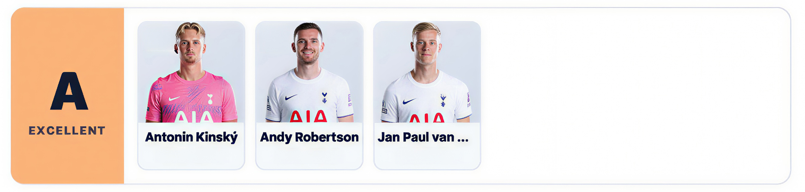
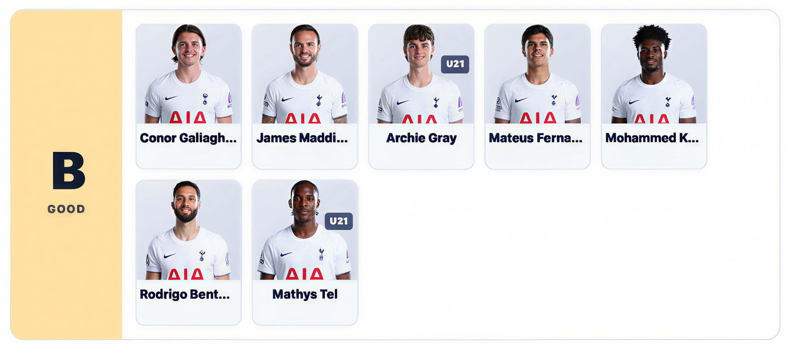
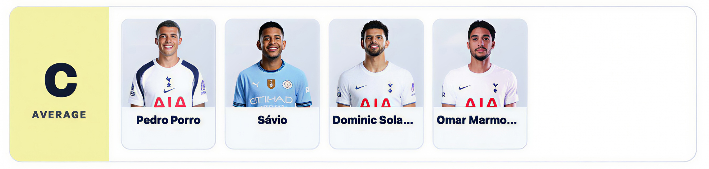
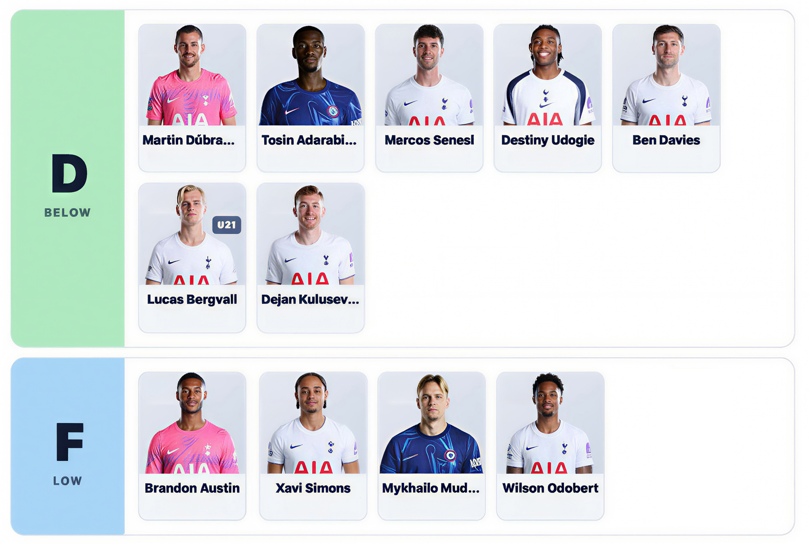

DAILY
2026/27 토트넘 초반 티어리스트

문제는 역시 부상입니다. 아무리 좋은 선수라도 정작 경기에 나서지 못한다면 높은 평가를 주기 어렵습니다. 부상과 컨디션 난조로 제 기량을 보여주지 못하는 선수들이 많아지면서 자연스럽게 D, F랭크의 비중도 높아졌습니다.
🏆 S랭크

S랭크에는 반더벤과 토날리입니다. 반더벤은 이제 토트넘 수비에서 대체하기 어려운 핵심 자원으로 자리 잡았고, 토날리는 엄청난 활동량을 바탕으로 중원의 중심을 잡아주고 있습니다. 두 선수 모두 공수 양면에서 팀에 미치는 영향력이 크다는 점에서 가장 높은 평가를 줬습니다.
문제는 역시 부상입니다. 아무리 좋은 선수라도 정작 경기에 나서지 못한다면 높은 평가를 주기 어렵습니다. 부상과 컨디션 난조로 제 기량을 보여주지 못하는 선수들이 많아지면서 자연스럽게 D, F랭크의 비중도 높아졌습니다.
🔥 A랭크

A랭크에는 킨스키, 로버트슨, 반 헤케를 선정했습니다. 각자의 위치에서 제 몫을 해내며 팀에 안정감을 더하는 선수들입니다.
👍 B랭크

B랭크에는 갤러거, 매디슨, 그레이, 마테우스 페르난데스, 쿠두스, 텔, 벤탄쿠르를 선정했습니다. 충분한 능력과 경쟁력을 갖췄지만, 부상이나 경기력의 기복으로 꾸준한 활약을 보여주지 못한 선수들입니다.
⚖️ C랭크

C랭크는 기대에 비해 다소 아쉬운 선수들입니다. 포로, 사비우, 솔란케, 마르무시를 선정했습니다. 개인 능력은 인정하지만, 부상과 경기력의 기복으로 기대만큼의 영향력을 보여주지는 못했습니다.
🤕 D-F랭크

D랭크부터는 부상과 부족한 출전 기회가 평가에 크게 작용했습니다. 실력 자체보다는 이번 시즌 팀에 얼마나 기여했는지를 기준으로 평가했습니다.
결국 이번 티어리스트를 만들면서 가장 크게 느낀 점은 좋은 선수를 보유하는 것과 그 선수를 제대로 활용할 수 있는 것은 전혀 다른 문제라는 사실입니다. 특히 부상자가 많은 토트넘에서는 더욱 그렇습니다. 아무리 뛰어난 선수라도 경기장에 없다면 팀에 힘을 보탤 수 없습니다. 반대로 꾸준히 출전하며 자신의 역할을 해내는 선수들의 가치는 더욱 크게 느껴집니다. 결국 중요한 건 이름값이 아니라, 지금 팀에 얼마나 도움이 되고 있느냐겠죠. 물론 어디까지나 개인적인 평가입니다.